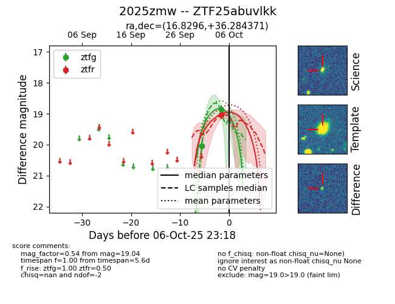
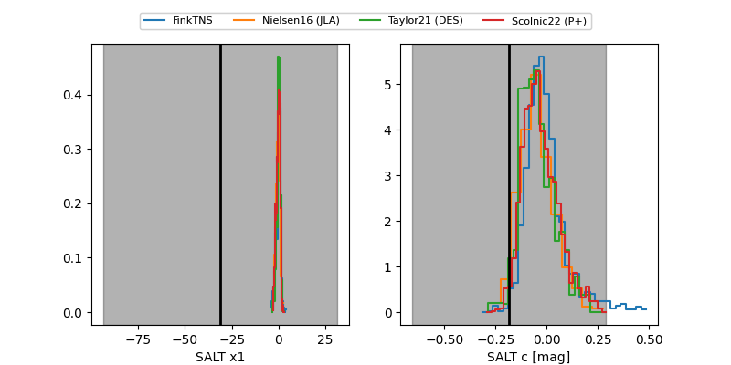

FINK: ZTF25abuvlkk
Lasair: ZTF25abuvlkk
ALeRCE: ZTF25abuvlkk
TNS: 2025zmw
YSE: 2025zmw
ZTF25abuvlkk (ztf,fink)
2025zmw (tns,yse)
equatorial (ra, dec) = (16.8296,+36.28437)
galactic (l, b) = (126.5067,-26.47712)


last ztfg=18.86, ztfr=19.04
2 ztfg, 1 ztfr detections